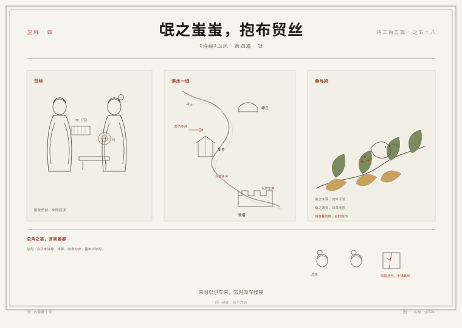
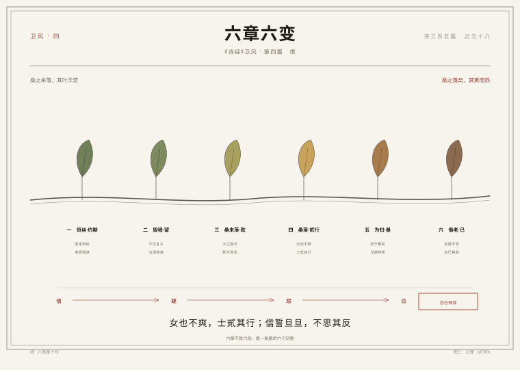

第五十八篇 氓
卫风 · 之四 SJ058
朗读 · 普通话
依经文正文朗读，句读从文；不配乐、不改速、不加拖腔。全库同一音色（豆包 TTS），非播音员录制。
一 解题
诗三判：
- 谁在说：一个被弃的女子，自叙半生。第一人称，不等于作者就是她；但诗把她的口吻写到极真。
- 说什么事：从贸丝求婚、逾墙相望、卜筮迎娶，到三年为妇、色衰见弃、兄弟咥笑，最后一句「亦已焉哉」。这不是一段情，是一桩婚姻的完整账。
- 为何编在此：卫风第四。前《硕人》写贵而见弃，此篇写贫而见弃；一贵一贱，同是婚姻里的冷。卫风由武公之美，到庄公之昏，再到氓之变，一国三世，盛衰对见。
《毛序》：「《氓》，刺时也。宣公之时，礼义消亡，淫风大行，男女无别，遂相奔诱。华落色衰，复相弃背。或乃困而自悔，丧其妃耦，故序其事以风焉。美反正，刺淫泆也。」
朱子《诗集传》：「此淫妇为人所弃，而自叙其事，以道其悔恨之意也。」
本库的看法：《氓》是一篇「信」的破产记。
她信他的蚩蚩，信卜筮的吉兆，信「及尔偕老」的誓；他却「反是不思」。最后她没有哭闹，只一句「亦已焉哉」——把信收回，把日子截断。诗最狠的地方，不是骂，是收。
二 经文
第一章
氓之蚩蚩，抱布贸丝。匪来贸丝，来即我谋。送子涉淇，至于顿丘。匪我愆期，子无良媒。将子无怒，秋以为期。
第二章
乘彼垝垣，以望复关。不见复关，泣涕涟涟。既见复关，载笑载言。尔卜尔筮，体无咎言。以尔车来，以我贿迁。
第三章
桑之未落，其叶沃若。于嗟鸠兮，无食桑葚。于嗟女兮，无与士耽。士之耽兮，犹可说也。女之耽兮，不可说也。
第四章
桑之落矣，其黄而陨。自我徂尔，三岁食贫。淇水汤汤，渐车帷裳。女也不爽，士贰其行。士也罔极，二三其德。
第五章
三岁为妇，靡室劳矣。夙兴夜寐，靡有朝矣。言既遂矣，至于暴矣。兄弟不知，咥其笑矣。静言思之，躬自悼矣。
第六章
及尔偕老，老使我怨。淇则有岸，隰则有泮。总角之宴，言笑晏晏。信誓旦旦，不思其反。反是不思，亦已焉哉。
分章：六章，章十句。
三 韵读
| 一 |
蚩、丝、谋、淇、丘、期、媒 |
之、灰（平）；怒不入韵 |
| 二 |
垣、关、涟、言、迁 |
元、删、仙（平） |
| 三 |
落、若；葚、耽；说、说 |
铎、药（入）；寝、覃（平上）；薛（入，自韵） |
| 四 |
陨、贫；汤、裳、爽、行；极、德 |
真（平上）；阳（平上）；职、德（入） |
| 五 |
劳、朝、暴、笑、悼；妇、寐、遂 |
宵、豪、号、笑（平上去）；之、至（平去） |
| 六 |
怨、岸、泮、宴、晏、旦、反；思、哉 |
元、寒、换、霰、谏、阮（上去）；之、咍（平） |
一章除「怒」外，九句一韵；末句「秋以为期」仍收在同一韵里。「怒」不入韵，是句中停顿。二章换元部，望、见、泣、笑，声音由低到高。三章入声「落、若」起，转入平上「葚、耽」，再以两个「说」自韵，像一句话说了两遍。四章三转：真部写落，阳部写水，职、德写心。五章韵脚最杂，正是日子最乱。六章上去通押，收在「思、哉」两个平声字上，像一声长叹落地。
顾炎武《诗本音》把五、六章处理得较宽；本库不强行归并为单一韵部，只标主要韵组。
四 字义与名物
字义
- 氓——民；男子而不知其谁何之称。朱子说「盖男子而不知其谁何之称也」。不是「流氓」。
- 蚩蚩（chī）——毛传「敦厚之貌」；朱子「无知之貌」；《韩诗》又训「美貌」。三读并存。诗面取其憨厚，讽意取其无知。
- 布——币；布帛之布，不是钱。郑笺：「币者，所以贸买物也。」
- 贸——买、交易；「抱布贸丝」是以布换丝。毛传「贸，买也」。
- 匪——非。
- 即——就、靠近。
- 谋——谋为室家；商量婚事。
- 送子涉淇——女子送男子渡过淇水。子，男子通称；不是男子送女子。
- 顿丘——地名；毛传「丘一成为顿丘」。
- 愆期（qiān）——误期、过期。
- 将（qiāng）——愿、请。
- 垝垣（guǐ yuán）——毁坏的墙。垝，毁；垣，墙。
- 复关——毛传「君子所近也」；郑笺「因复关以托号民」；朱子「男子之所居也，不敢显言其人，故托言之」。诗里是那个人的代称，不必指实为某一关。
- 涟涟——泪流不断。
- 载——又、且。
- 卜、筮——龟甲占卜、蓍草占卦。
- 体——兆卦之体；卜筮所得卦兆。
- 咎言——凶咎之辞；「体无咎言」是卦兆没有不吉的话。
- 贿——财；此处指嫁妆。
- 迁——徙；搬过去。
- 沃若——润泽貌；桑叶肥润。
- 于嗟（xū jiē）——感叹词。
- 鸠——鹘鸠；似山雀而小，短尾青黑，多声。
- 葚（shèn）——桑实。鸠食葚多则醉，故戒其勿食。
- 耽（dān）——沉溺、相乐。
- 说——解、脱；「犹可说」是还可以解脱，「不可说」是脱不了身。
- 徂（cú）——往；「自我徂尔」是自从我嫁到你家。
- 三岁——多年；古书「三」多表多数，不必死读为三年。
- 食贫——过贫苦日子；郑笺「三岁食贫」是多年匮乏。
- 汤汤（shāng）——水盛貌。
- 渐（jiān）——浸渍、溅湿。
- 帷裳——车旁帷幔；妇人之车有之，又名童容。
- 爽——差、差错。
- 贰——二、不专一；「士贰其行」是男子行为有二心。
- 罔极——无中、无准；没有准则。
- 二三其德——反复无常，三心二意。
- 靡室劳——不以室家之务为劳；靡，无、不。
- 夙兴夜寐——早起晚睡。
- 靡有朝——没有一朝一夕的闲暇。
- 言既遂——你的心愿已经满足；一说婚约既成。
- 至于暴——以至于施暴、粗暴。
- 咥（xì）——笑貌；咥咥然笑。
- 躬自悼——自己伤悼自己。
- 隰（xí）——低湿之地。
- 泮（pàn）——畔、涯；毛传「坡」，郑笺读「畔」。
- 总角——结发；女子未许嫁、未笄时，结发为饰。
- 宴——安乐；「总角之宴」是童年少年时的欢好。
- 晏晏——和柔。
- 旦旦——明白、诚恳；郑笺「恳恻款诚」。
- 反——复、反覆；「不思其反」是不念其反覆、不顾誓言。
- 已——止、罢；「亦已焉哉」是算了、到此为止。
名物
- 布与丝——布帛之布、蚕丝；贸丝是初夏之事。图一左。
- 淇水与顿丘——送嫁定谋的水与丘；淇水在卫地，是卫风的地理底色。图一中。
- 垝垣与复关——毁墙与他的居处；登高望远，是恋爱里最卑微也最真切的动作。图一中。
- 卜、筮、体——龟兆、卦兆；婚姻的「吉」，是问出来的，也是被骗出来的。
- 桑、葚、鸠——桑叶荣枯比容色；鸠食葚醉比沉溺。图一右。
- 车与帷裳——迎嫁的车、归途的车；来时「以尔车来」，去时「渐车帷裳」，同一辆车，两个方向。
- 总角——童年结发；与「及尔偕老」对照，时间在这首诗中翻了一次面。
五 今译
第一章
那个人一副憨厚样子，抱着布来换丝。其实不是来换丝，是来就我商量婚事。我送你渡过淇水，一直送到顿丘。不是我误了婚期，是你没有好媒人。请你不要生气，就把秋天定为婚期吧。
第二章
我登上那倒塌的墙，遥望复关。看不见复关，眼泪不断；看见复关，又笑又说。你占卜、你筮卦，卦兆没有凶咎的话。那就赶着你的车来，把我的嫁妆搬走。
第三章
桑叶还没落，叶子润泽。唉，斑鸠啊，不要吃桑葚；唉，女子啊，不要和男子沉溺于情。男子沉溺，还可以解脱；女子沉溺，就脱不了身。
第四章
桑叶落了，黄了，掉下来。自从我嫁到你家，多年过贫苦日子。淇水滔滔，溅湿车帷。我没有差错，是你三心二意。你没有准则，反复无常。
第五章
多年做你的妻子，不以家务为苦；早起晚睡，没有一天闲暇。你的心愿满足了，就对我粗暴。兄弟不了解，反而讥笑我。静下来想想，只能自己伤心。
第六章
本想和你白头偕老，到老却让我怨恨。淇水有岸，隰地有畔。童年结发时的欢乐，言笑温柔；当年信誓旦旦，没想到你会违背。你既不顾誓言，那就算了吧。
六 章旨
一章：求婚与约期。
贸丝是借口，谋婚是实事；送淇、顿丘、愆期、良媒，一层层把「私情」拉回「礼」的门口。她不是没有分寸，她是先信了人。
二章：望与迎。
垝垣、复关、泣涕、载笑，四句写尽等待；卜筮、体无咎、车来、贿迁，四句写尽迎娶。喜到极处，后来才跌得重。
三章：桑未落。
桑叶沃若比容色；鸠食葚比沉溺；「士耽可说，女耽不可说」是全诗最清醒的一句。它不是骂女子，是提前把代价说给她听。
四章：桑落。
叶黄而陨，色衰而弃；「女也不爽，士贰其行」把责任分清；「士也罔极，二三其德」把男人的无准定死。淇水汤汤，渐车帷裳，是归途，也是清算。
五章：为妇。
靡室劳、夙兴夜寐、靡有朝，是她的付出；言既遂、至于暴，是他的翻脸；兄弟不知、咥其笑，是礼法社会补上的一刀。最后「躬自悼」，不是求人怜，是自己认账。
六章：决绝。
及尔偕老，本是誓；老使我怨，是果。淇有岸、隰有泮，是物有涯；士也罔极，是人无涯。总角之宴、言笑晏晏、信誓旦旦，三句把最甜的过去摆出来；「反是不思，亦已焉哉」，一刀截断。
六章合看：一条线，三次变。
从「信」到「疑」，从「疑」到「怨」，从「怨」到「已」。不是一口气骂到底，是一步步醒过来。
七 诗教
- 兴：桑叶荣枯兴容色盛衰；淇水涨落兴情之起伏；鸠食葚兴女子沉溺。物象不是装饰，是时间的刻度。
- 观：观「信」如何生、如何死；观「礼」与「情」如何拉扯；观一个女子从「载笑载言」到「亦已焉哉」的全过程。
- 群：可与被辜负者同群；但诗不劝人一味沉溺，它给出「止损」的样本。也可与「只劝人忍」者同群，让他们看看「忍」到最后是什么。
- 怨：怨而不失自持。她没有撕破脸，也没有自轻；「亦已焉哉」是怨的收束，不是爱的延续。
八 分寸与边界
- 不可把「氓」只当天生的坏人。诗里的他，最初也「蚩蚩」，也许憨厚，也许无知，也许只是生得好看；他的变是渐的：食贫、遂愿、至于暴。正因为他曾像人，后来的「贰行」才可怕。
- 不可把女子只当「淫妇」或纯受害者。朱子「淫妇」二字道学气太重；但她确实「私奔」违礼，诗也写「兄弟咥笑」。她有主动、有判断、有决绝，不是一张被揉皱的纸。
- 不可把「送子涉淇」读成男子送女子。是她送他；方向一错，全章的主动权就错。
- 不可把「复关」指实为某一关某一地。毛、郑、朱三说；诗里它是「那个人」的代称。指实了，诗就变成地理考据。
- 不可把「总角之宴」当婚后。它是童年少年时；与「及尔偕老」对照，才见时间之狠。
- 不可把「亦已焉哉」读成软弱。它不是原谅，也不是哭诉；是止损，是关门，是把剩下的日子留给自己。
- 不可把「三岁」死读为三年。诗里的「三」常表多年；三年也好，多年也好，重点是「久」。
九 存疑
- 诗旨：毛序主「刺时」，美反正、刺淫泆；朱子主「淫妇自叙悔恨」；现代多读作弃妇诗、婚恋悲剧。本库取「自叙＋悔恨＋决绝」三層，不取单一的道德骂名。
- 作者：卫人；或说女子自作。第一人称口吻极真，但「自叙」不等于「自作」。无确证。
- 「氓」与「蚩蚩」：氓，民／男子；蚩蚩，敦厚／无知／美貌（《韩诗》）。三说并存，诗面与讽意不同。
- 「复关」：毛传「君子所近」；郑笺「托号民」；朱子「男子所居」；今人又多指地名。不必指实。
- 「说」：解、脱；毛郑朱皆训「解」，今多读「脱」。两读义近，不必强分。
- 「反是不思」：反，反覆／违背；郑笺「不念复其前言」，朱子「不思其反覆」。末句或读「违背誓言」，或读「不念反覆」，都可通。
- 「三岁」：三年／多年。古书「三」多表多数；诗不必死。
- 篇次与宣公：毛序系于宣公，诗本文无明文；诗可以作于宣公时，也可以是对一代风气的概括。不必把每个字都钉在史上。
十 跨典
- 《邶风·谷风》：同为弃妇诗。谷风柔婉，反复说「宴尔新昏」；氓则从贸丝写到「亦已焉哉」，有完整的婚姻史与决断。两篇对读，一柔一刚。
- 《卫风·硕人》：庄姜贵而见弃，氓女贫而见弃。贵者被「不答」，贫者被「贰行」；身份不同，冷遇相同。
- 《礼记·昏义》与六礼：「匪我愆期，子无良媒」——媒不是闲笔，是礼的门槛。诗写的是情，也是礼。
- 《卫风》淇水：《淇奥》的竹、《硕人》的河、《氓》的淇，一条水串起卫风的三篇；从君子之德，到美人之盛，再到弃妇之归。
- 后世弃妇叙事：《孔雀东南飞》《琵琶行》一路下来，都能听见「女也不爽，士贰其行」的回声；但《氓》更冷，因为它不让女子哭到最后，只让她说「算了」。
十一 双卡与图
双卡五对：
| 氓（民／男子） |
氓（流氓，误） |
| 蚩蚩（敦厚／无知） |
蚩蚩（笑嘻嘻，误） |
| 复关（男子所居／代称） |
复关（重新开关，误） |
| 体无咎言（卦兆无凶） |
体无咎言（身体没病，误） |
| 反是不思（不顾誓言／不念反覆） |
反是不思（反而思念，误） |

图一 · 贸丝、淇水、桑鸠 名物图

图二 · 六章六变，从贸丝到亦已焉哉 义理图
读图三处：
- 贸丝：图一左，布与丝是交易的由头；「匪来贸丝」四个字，把一场求婚藏在生意里。
- 淇水一线：图一中，送、望、迎、归都在水上；来时车马，去时帷裳。
- 六叶：图二，桑叶从沃若到黄陨，六章不是六段，是一条路的六个刻度。